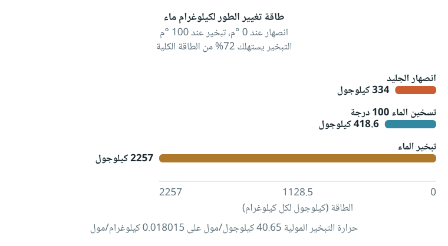

الحرارة الكامنة
Latent Heat
الطاقة اللازمة لتغيير طور كتلة دون تغيير حرارتها: تبخير كيلوغرام ماء عند 100 °م يحتاج 2,257 كيلوجول، أي 5.39 ضعف طاقة تسخينه من 0 إلى 100 °م.
الحرارة الكامنة هي الطاقة المتبادلة عند تغيّر الطور: انصهار، تبخّر، تصعيد، أو التحول العكسي. تُسمّى كامنة لأنها لا تظهر ارتفاعًا في الحرارة؛ تُختزن طاقةً كامنة في فصل الجزيئات بعضها عن بعض، وتُستعاد كاملة عند عودة الطور.
حرارة الانصهار للجليد 334 كيلوجول/كيلوغرام، وحرارة التبخير للماء عند 100 °م 2,257 كيلوجول/كيلوغرام. الفارق بينهما كبير لأن الانصهار يفصل شبكة بلورية كثيفة نسبيًّا، أما التبخير فيفصل جزيئات ويوسّع الحجم نحو 1,600 مرة، فيحتاج طاقة أكبر بكثير. هذه القيمة الكبيرة هي سبب عمل أبراج التبريد بالتبخّر، وسبب خطورة البخار على الجلد: البخار عند 100 °م يُحرّر عند تكاثفه طاقةً تعادل تسخين الماء نفسه من الصفر إلى 100 °م خمس مرات.
كيف تعمل الظاهرة؟
في السائل تتبادل الجزيئات مواقعها وتتغلب على تجاذب جزئي جزئي. لتبخير جزيء يجب أن يمتلك طاقة حركية تكفي للتغلب على طاقة التجاذب مع جيرانه، وأن يبذل شغلًا ضد الضغط الجوي عند توسّع الحجم. الجزيئات التي تمتلك الطرف الأعلى من توزيع ماكسويل–بولتزمان هي التي تتبخّر، فتُفقد الكتلة الباقية أعلى طاقاتها ويبرد السائل إن لم يُعوَّض.
عند إضافة حرارة إلى خليط سائل–بخار عند درجة الغليان، لا ترتفع الحرارة لأن الطاقة الداخلة تُستهلك في كسر التجاذب لا في زيادة متوسط الطاقة الحركية. تبقى الحرارة ثابتة حتى يتحول آخر جزء من السائل، ثم تصعد الحرارة في البخار. الشغل ضد الضغط يظهر في أن حرارة التبخير عند ضغط أعلى أقل: جزء من الطاقة يُصرَف شغل تمدد منذ البداية.
العلاقة بالأرقام
حرارة التبخير المولية للماء 40.65 كيلوجول/مول، والكتلة المولية 0.018015 كيلوغرام/مول، فتصبح الحرارة النوعية 40.65 ÷ 0.018015 = 2,257 كيلوجول/كيلوغرام. وللمقارنة: تسخين الكيلوغرام من 0 إلى 100 °م يحتاج 418.6 كيلوجول، فالنسبة 5.39.
هذا يفسّر برج التبريد: تبخير 1% من كتلة الماء يسحب 2,257 ÷ 100 = 22.57 كيلوجول لكل كيلوغرام من الماء الباقي، فيخفض حرارته 5.39 كلفن (22.57 ÷ 4.186). ولهذا يكفي فقد صغير بالكتلة لتبريد كبير، وهو مبدأ التعرّق وتبريد المحولات بالتبخير. وحرارة الانصهار 334 كيلوجول/كيلوغرام تُقارن بـ418.6 كيلوجول لتسخين الماء كله من الصفر إلى الغليان، أي أن إذابة الجليد تكلّف أقل من تسخين الناتج.
مفاهيم متقاربة
الخلط الأول: «الحرارة الكامنة تختفي». لا تختفي؛ تُختزن كطاقة كامنة في الترتيب الجزيئي وتُستعاد عند التكاثف أو التجمد، وهو أساس عمل وسائد التدفئة الكيميائية ومخازن الحرارة الكامنة. الخلط الثاني: مساواة التبخّر بالغليان. التبخّر يحدث من السطح عند أي درجة، والغليان يحدث في الكتلة عند ضغط البخار المساوي للضغط المحيط.
الخلط الثالث: ظنّ أن الحرارة الكامنة ثابتة. تنخفض بشدة مع ارتفاع الحرارة وتصل إلى الصفر عند النقطة الحرجة (374 °م و22.06 ميغاباسكال للماء)، حيث يزول الفرق بين السائل والغاز. والخلط الرابع: اعتبار السعة الحرارية الكبيرة للماء بديلًا عن الحرارة الكامنة؛ الأولى ترفع الحرارة، والثانية تغيّر الطور بلا رفعها.
حدود التطبيق
القيم المذكورة لماء نقي عند ضغط جوي معياري وتوازن تام. في المحاليل يحدث التبخير على مدى حراري، وتنخفض حرارة التبخير الفعلية للمذيب بتأثير الإذابة. وفي المسام الشعرية تنخفض الحرارة الكامنة الظاهرية وتتغير نقطة الغليان بانحناء السطح.
لا تصف الحرارة الكامنة حركية التحول: الماء النقي يمكن أن يُسخَّن فوق 100 °م بلا غليان في وعاء أملس، ثم يغلي فجأة عند تكوّن نواة بخار. وفي التحولات الزجاجية والبوليمرات لا توجد حرارة كامنة محددة بل انتقال تدريجي. كما لا تُستخدم القيمة الثابتة في الحسابات الهندسية عند ضغوط عالية، بل تُقرأ من جداول البخار عند الضغط الفعلي.

| الكمية | القيمة | المصدر |
|---|---|---|
| حرارة تبخير الماء عند 100 °م | 2,257 كيلوجول/كيلوغرام | [1] |
| حرارة التبخير المولية للماء | 40.65 كيلوجول/مول | [1] |
| حرارة انصهار الجليد | 334 كيلوجول/كيلوغرام | [2] |
| نسبة حرارة التبخير إلى تسخين الماء من 0 إلى 100 °م | 5.39 بلا وحدة | [3] |
المصادر
- 1 Water — Thermochemistry data (enthalpy of vaporization) — NIST Chemistry WebBook. webbook.nist.gov/cgi/cbook.cgi?ID=C7732185 · اطُّلع عليه 2026-11-16
- 2 OpenStax College Physics 2e — Phase Change and Latent Heat — OpenStax. openstax.org/books/college-physics-2e/pages/14-3-phase-change-and-latent-heat · اطُّلع عليه 2026-11-16
- 3 Phase Transitions — OpenStax, Chemistry 2e. openstax.org/books/chemistry-2e/pages/10-3-phase-transitions · اطُّلع عليه 2026-11-16
استشهد بهذا المصطلح
الصيغتان مبنيتان من بيانات الصفحة نفسها: العنوان والتاريخ ورابط النسخة المنشورة.
الحرارة الكامنة — Latent Heat. (2026). ديوان المعرفة — انفراد. https://infiradev.com/diwan/terms/latent-heat.html
@misc{latent-heat2026,
title = {الحرارة الكامنة},
titleaddon = {Latent Heat},
howpublished = {{ديوان المعرفة — انفراد} — مرجع علمي عربي},
year = {2026},
url = {https://infiradev.com/diwan/terms/latent-heat.html},
urldate = {2026-11-16},
note = {مراجعة علمية: مراجعة آلية — ديوان المعرفة (روابط المصادر + عقد المحتوى + وجود الرسم) 2026-11-16}
}
راجعه: مراجعة آلية — ديوان المعرفة (روابط المصادر + عقد المحتوى + وجود الرسم) 2026-11-16 · 2026-11-16 · آخر تحديث 2026-11-16